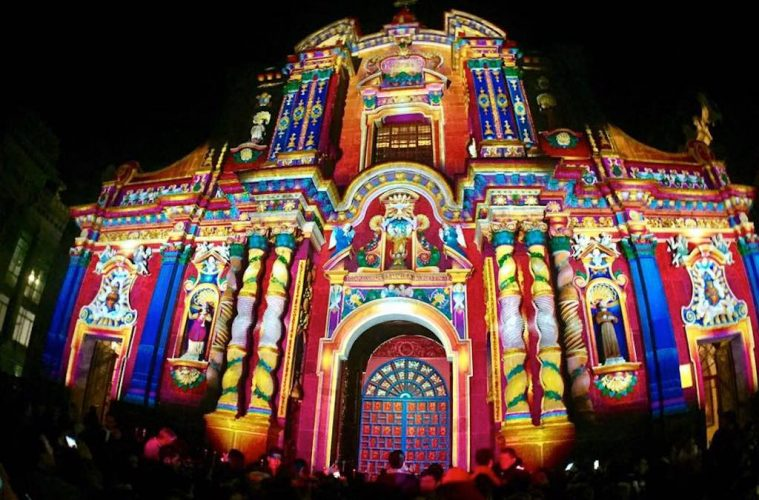
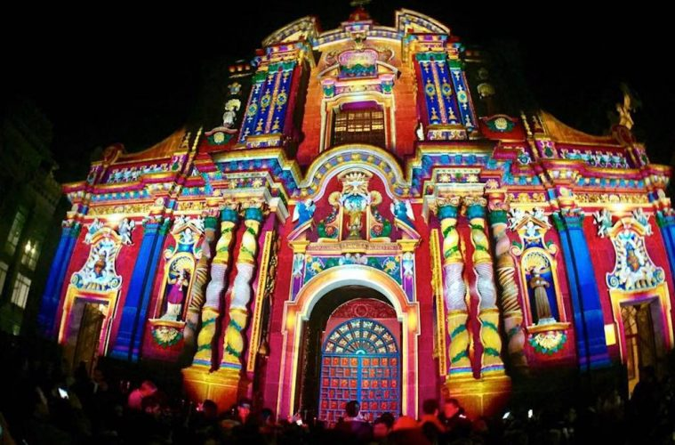

The Ecuadorian Andes Mountains
From a bird’s eye view, the Andean highlands spring forth with a collage of colors, as if nature has woven its own tapestry. A closer look, however, tells us that the striking panorama is not only an expression of nature, but also a product of people’s labor. In the upper reaches of the Andes, the afternoon sun drapes over wide stretches of untouched paramo.
Down in the valleys, it illuminates fields of corn, barley, wheat, and quinoa, turning them into gold, amber, lilac and amethyst patterns that change with the shadows cast by playful clouds. In the Andes, land of interplay between light and dark and the natural and the man-made, it is impossible to experience the same day twice.
Quintessentially Ecuador, the Andean region (also known as the Sierra and the Highlands) is the most visited region in the country. Its cultural and natural diversity spans grassy highlands (paramo), cloudforests, mountain lakes, active volcanoes, thermal baths, Indian markets, colonial towns and haciendas.
TOP DESTINATIONS IN THE ANDES
| NAME | DESCRIPTION |
|---|---|
| Quito | described as a city with a small town atmosphere (although it is rapidly growing into a sprawling metropolis). Once the capital of the northern Inca Empire,Quito is home to “Old Town“, one of the most extensive colonial districts in Latin America. Named a World Heritage Site by the United Nations, |
| Otavalo | Imbabura province, north of Quito, is famous for its lakes, traditional adobe villages, indigenous communities and native handicrafts. The town of Otavalo is home to one of South America’s most famed indigenous market — a definite stop for most visitors. |
| Ibarra and the San Lorenzo Train | Ibarra, Imbabura’s provincial capital, is also known as the White City due to its colonial whitewashed buildings, cobblestone streets and red-tiled roofs. Horse-drawn carts clattering down the streets add to the historic ambiance. Most travelers come to Ibarra to hop aboard the train which rolls its way down from the Andes to the coastal town of San Lorenzo, 193 miles away. |
| Mitad del Mundo | Just north of Quito, you’ll find the Mitad del Mundo, a monument marking the equator, is a convenient half hour from central Quito. It includes a museum with informative displays on Ecuador’s four regions and ethnic groups. |
 
